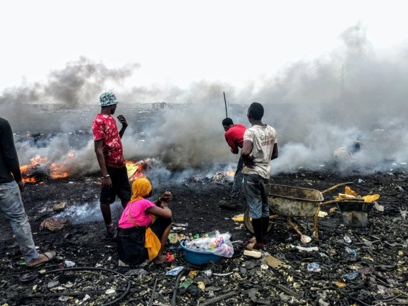
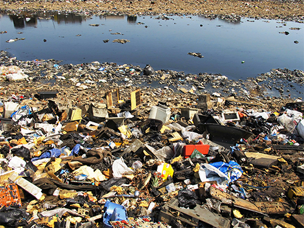

Contamination in the air occurs when e-waste is informally disposed by dismantling, shredding or melting the materials, releasing dust particles or toxins, such as dioxins, into the environment that cause air pollution and damage respiratory health. E-waste of little value is often burned, but burning also serves a way to get valuable metal from electronics, like copper. Chronic diseases and cancers are at a higher risk to occur when burning e-waste because it also releases fine particles, which can travel thousands of miles, creating numerous negative health risks to humans and animals. Higher value materials, such as gold and silver, are often removed from highly integrated electronics by using acids, desoldering, and other chemicals, which also release fumes in areas where recycling is not regulated properly. The negative effects on air from informal e-waste recycling are most dangerous for those who handle this waste, but thepollution can extend thousands of miles away from recycling sites. The air pollution caused by e-waste impacts some animal species more than others, which may be endangering these species and the biodiversity of certain regions that are chronically polluted. Over time, air pollution can hurt water quality, soil and plant species, creating irreversible damage in ecosystems. For instance, an informal recycling hub in Guiyu, China that was formed by parties interesting in extracting valuable metals from e-waste, and subsequently has caused the region to have extremely high lead levels in the air, which are inhaled and then ingested when returned to water and soil. This can cause disproportionate neurological damage to larger animals, wildlife and humans in the area.

On Soil
When improper disposal of e-waste in regular landfills or in places where it is dumped illegally, both heavy metals and flame retardants can seep directly from the e-waste into the soil, causing contamination of underlying groundwater or contamination of crops that may be planted near by or in the area in the future. When the soil is contaminated by heavy metals, the crops become vulnerable to absorbing these toxins, which can cause many illnesses and doesn’t allow the farmland to be as productive as possible. When large particles are released from burning, shredding or dismantling e-waste, they quickly re-deposit to the ground and contaminate the soil as well, due to their size and weight. The amount of soil contaminated depends on a range of factors including temperature, soil type, pH levels and soil composition. These pollutants can remain in the soil for a long period of time and can be harmful to microorganisms in the soil and plants. Ultimately, animals and wildlife relying on nature for survival will end up consuming affected plants, causing internal health problems.
On Water
After soil contamination, heavy metals from e-waste, such as mercury, lithium, lead and barium, then leak through the earth even further to reach groundwater. When these heavy metals reach groundwater, they eventually make their way into ponds, streams, rivers and lakes. Through these pathways, acidification and toxification are created in the water, which is unsafe for animals, plants and communities even if they are miles away from a recycling site. Clean drinking water becomes problematic to find. Acidification can kill marine and freshwater organisms, disturb biodiversity and harm ecosystems. If acidification is present in water supplies, it can damage ecosystems to the point where recovery is questionable, if not impossible.

On Humans
As mentioned, electronic waste contains toxic components that are dangerous to human health, such as mercury, lead, cadmium, polybrominated flame retardants, barium and lithium. The negative health effects of these toxins on humans include brain, heart, liver, kidney and skeletal system damage. It can also considerably affect the nervous and reproductive systems of the human body, leading to disease and birth defects. Improper disposal of e-waste is unbelievably dangerous to the global environment, which is why it is so important to spread awareness on this growing problem and the threatening aftermath. To avoid these toxic effects of e-waste, it is crucial to properly e-cycle, so that items can be recycled, refurbished, resold, or reused. The growing stream of e-waste will only worsen if not educated on the correct measures of disposal.
Website made by: Arjun Ambekar and Neil George of 6B